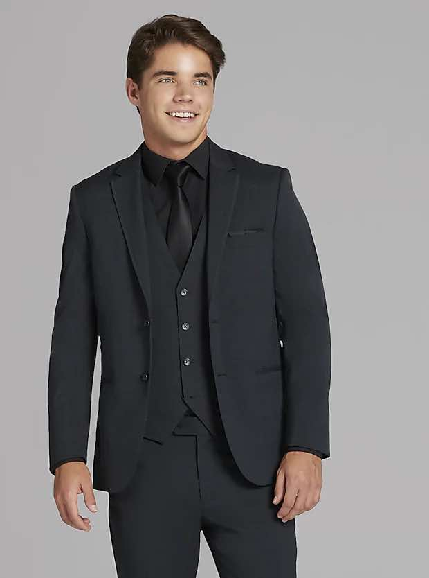
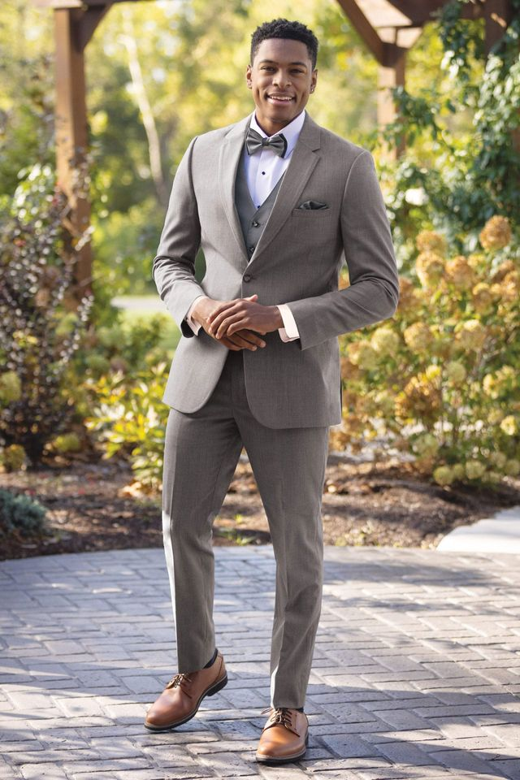
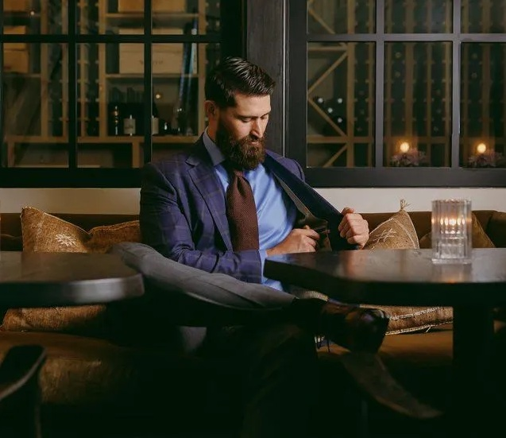

Posted on June 23, 2025
Where to Find the Perfect Tuxedo or Suit in Colorado Springs
Gentlemen—your wedding look deserves as much care as the bride’s gown. A well-chosen tux or suit not only sets the tone and elevates portraits, but ensures you feel sharp, comfortable, and confident on the big day. In Colorado Springs, you have excellent options—whether you plan to rent or invest in a custom piece. Here’s everything you need to know.
1. Why Your Tux or Suit Matters
Your wedding attire is more than decoration: it’s a statement. Couples often remember how they looked standing beside each other at the altar, in photos, and during dances. A tailored tux or suit ensures:
- Flattering fit: Slim enough for today’s look, but comfortable in movement.
- Fabric that suits the season: Breathable linen blends for summer; wool for cooler weather.
- Style consistency: White-tie, black-tie, or casual outdoor weddings each call for different dress codes.
- Portrait longevity: You want a suit you’re proud to look back on for years, not something outdated.
2. Top 5 Colorado Springs Retailers
🔹 Men’s Wearhouse
Well-known across the country, Men's Wearhouse offers multiple lines—from budget rentals to formal designer suits. Expect professional fit consultations, package deals for groom and groomsmen, and seasonal sales.
🔹 Gentlemen's Choice
A local favorite, Gentlemen's Choice in Fountain provides curated tuxedo and dress suit rentals. Friendly, small-shop vibes, and they’ll pull matching shirts, ties, and accessories in-store for you.
🔹 Jim's Formal Wear
A newer independent shop, Jim's Formal Wear gives you boutique-level attention with fit tailoring and suit packages designed to complement your wedding theme and color palette.
🔹 Bespoke Custom Clothing
Specializing in custom-made suits, Bespoke Custom Clothing works with you to select fabric, lining, cut, and functions—perfect for a custom piece that fits like a glove.
🔹 Something New Boutique
Located downtown, Something New Boutiqueoffers classic black-tie options and contemporary suits, from rentals to custom orders. Their stylists help choose coordinating attire for the placement in the wedding party.
3. Renting vs Buying: Pros & Cons
Renting
- Cost-effective: Often $150–$300 per tux.
- Convenience: Alterations usually included, and you don’t stash it afterward.
- Matching: Group rental makes coordinating groomsmen effortless.
Buying
- Investment: Expect $500–$1,500, depending on fabric and brand.
- Ownership: Perfect if you’ll reuse it—think interviews, events, future weddings.
- Custom fit: Tailored to you—no extra material or compromise.
✔️ Choose based on usage: renting if you’ll only wear it once, buying if you foresee additional uses.
4. Fabric Quality: Why It Impacts Price
- Polyester blends (low-cost): <$200—wrinkle easily, less breathable.
- Wool blends (mid-range): $400–$800—durable, natural look, comfortable year-round.
- Premium wool (Tropical, Super 120s–150s): $1,000+—lightweight, luxe drape, higher thread count.
- Silk, cashmere, or velvet: $1,200+—premium textures and tactile richness for upscale weddings.
Fabric choice affects comfort, crease resistance, and how well photos come out under different lighting. Tests on men’s suits show wool blends drape more naturally than synthetics, leaving wrinkles less visible in long portraits.
5. Other Important Considerations
- Fit guidelines: Jacket shoulders should end at your natural shoulder; sleeves should fall half an inch below your wrist bone.
- Color coordination: Navy, charcoal, or earth tones pair beautifully with mountain brides and alternating bridesmaid colors.
- Seasonal touches: Add suspenders, pocket squares, or a flare of contrast lining for personality.
- Trial fitting: Schedule fittings at least 4–6 weeks before the ceremony.
- Accessories: Think cufflinks, ties, shoes, belt—your whole look is a photo story.
6. Affordable Photographers & Coordinated Style
And when it comes to capturing your tux in all its tailored glory, Trailblaze Studios offers affordable wedding photography in Colorado Springs—starting at $750 for five hours of coverage. Our wedding-package pricing emphasizes natural light shots that highlight the clean lines, silhouette, and personality of your attire during golden hour and reception celebrations.
With Trailblaze Studios, your stunning tux and carefully chosen suit will be remembered—in photos taken with care and focus, without breaking the bank.
7. Final Checklist Before You Commit
- Decide early whether to rent or buy based on your plans
- Choose fabric quality that matches your season and style
- Book your appointment 2–3 months ahead
- Understand return/alteration deadlines—most rental suits have set dates
- Coordinate accessories with your wedding colors
Your wedding day is one of a few moments you'll be photographed in full suit—make sure it’s a look you love and feel confident in. For tailored photography that complements that effort, message or call (619) 500‑4737 and let’s make your wedding look timeless.
At Trailblaze Studios we are dedicated to being the most affordable wedding photographer in Colorado Springs